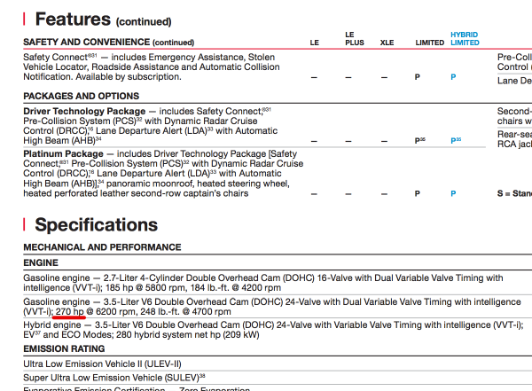

Когда мы планировали обновлять машину два года назад, то подыскивали именно паркетник, чтобы и сидеть повыше и ям поменьше. Opel Zafira была хорошим автомобилем, если бы в морозы не выдавливало масло, и если бы ей не было 5 лет.
Хотелось новый автомобиль и выбирать было мало из чего. Машины уровня полноценных джипов сильно выбивались из бюджета, а машины уровня Kia Sportage хоть и прикольны на вид, но хотелось не только прикола, а и комфорта.
После продолжительного выбора и мучительных подсчётов денег оставались, в принципе, два варианта — Nissan Murano и Toyota Highlander.
Оба варианта — среднеразмерные паркетники, оба оснащены 6-цилиндровыми двигателями в 3,5 литра. Хайлендэр выигрывал постоянным полным приводом, бОльшим объёмом багажника, более просторным салоном. На тест-драйве ехал, благодаря всё тому же приводу, как танк. Но внутри машина не показалась уютной, всё по причине того же «простора салона». И цена была тысяч на 200 выше.
Мурано нам понравился сразу, правда полный привод подключаемый, и багажник очень маленький, но были у Мурано два преимущества. Первое — подогреваемые задние сиденья, а второе — разница в мощности мотора в 29 лошадиных сил, в пользу Хайлэндера.
Казалось бы, почему тогда выбрали Мурано. Но есть нюанс. Заявленная мощность двигателей Nissan Murano, продаваемых на российском рынке 249 лошадиных сил. Это значит, что он не переходит последнюю границу дифференцированного транспортного налога, и налог на него составляет в год 249х68=16 932 рубля. Обладателям похожего Хайлэндера приходится выкладывать уже 278х135=37 530 рублей, что, конечно, менее приятно.
Самое примечательное в этой истории то, что за пределами России точно такие же двигатели на Nissan Murano имеют, по странному стечению обстоятельств, мощность в 265 лошадиных сил. Судя по всему в российском Nissan свои оклады получают не зря.
История получила своё продолжение в начале этого года. В России начались продажи Toyota Highlander третьего поколения. Говоря языком маркетологов, «машина получила новую внешность» и всё такое, но нас интересует не это. У машины остался прежний двигатель 2GR-FE, который, как и прежде, в зависимости от автомобиля, выдаёт от 266 до 280 лошадиных сил. В обновлённой Toyota Highlander, например, — 270.

Но не в России. В России мощность превращается, превращается мощность…
Ура, товарищи.